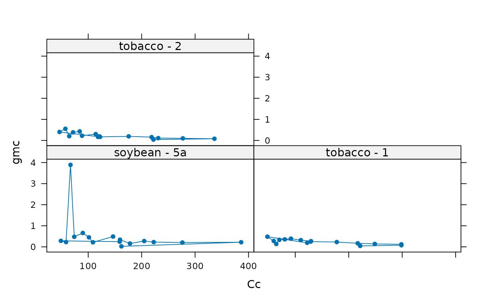

Calculate C3 variable J
calculate_c3_variable_j.RdCalculates values of mesophyll conductance and chloroplast CO2 concentration using the "variable J" equation, as originally described in Harley et al. (1992) and modified in Moualeu-Ngangue, Chen, & Stutzel (2016). This function can accomodate alternative colum names for the variables taken from Licor files in case they change at some point in the future. This function also checks the units of each required column and will produce an error if any units are incorrect.
Usage
calculate_c3_variable_j(
exdf_obj,
alpha_g,
alpha_s,
alpha_t,
Gamma_star_at_25,
RL_at_25,
tau,
Wj_coef_C = 4.0,
Wj_coef_Gamma_star = 8.0,
a_column_name = 'A',
ci_column_name = 'Ci',
gamma_star_norm_column_name = 'Gamma_star_norm',
phips2_column_name = 'PhiPS2',
qin_column_name = 'Qin',
rl_norm_column_name = 'RL_norm',
total_pressure_column_name = 'total_pressure',
hard_constraints = 0,
perform_checks = TRUE,
return_exdf = TRUE
)Arguments
- exdf_obj
An
exdfobject.- alpha_g
A dimensionless parameter where
0 <= alpha_g <= 1, representing the proportion of glycolate carbon taken out of the photorespiratory pathway as glycine.alpha_gis often assumed to be 0. Ifalpha_gis not a number, then there must be a column inexdf_objcalledalpha_gwith appropriate units. A numeric value supplied here will overwrite the values in thealpha_gcolumn ofexdf_objif it exists.- alpha_s
A dimensionless parameter where
0 <= alpha_s <= 0.75 * (1 - alpha_g)representing the proportion of glycolate carbon taken out of the photorespiratory pathway as serine.alpha_sis often assumed to be 0. Ifalpha_sis not a number, then there must be a column inexdf_objcalledalpha_swith appropriate units. A numeric value supplied here will overwrite the values in thealpha_scolumn ofexdf_objif it exists.- alpha_t
A dimensionless parameter where
0 <= alpha_t <= 1representing the proportion of glycolate carbon taken out of the photorespiratory pathway as CH2-THF.alpha_tis often assumed to be 0. Ifalpha_tis not a number, then there must be a column inexdf_objcalledalpha_twith appropriate units. A numeric value supplied here will overwrite the values in thealpha_tcolumn ofexdf_objif it exists.- Gamma_star_at_25
The chloroplastic CO2 concentration at which CO2 gains from Rubisco carboxylation are exactly balanced by CO2 losses from Rubisco oxygenation, at 25 degrees C, expressed in
micromol mol^(-1). IfGamma_star_at_25is not a number, then there must be a column inexdf_objcalledGamma_star_at_25with appropriate units. A numeric value supplied here will overwrite the values in theGamma_star_at_25column ofexdf_objif it exists.- RL_at_25
The respiration rate at 25 degrees C, expressed in
micromol m^(-2) s^(-1). IfRL_at_25is not a number, then there must be a column inexdf_objcalledRL_at_25with appropriate units. A numeric value supplied here will overwrite the values in theRL_at_25column ofexdf_objif it exists.- tau
The proportionality factor used to calculate the RuBP regeneration rate from chlorophyll fluorescence measurements (dimensionless). If
tauis not a number, then there must be a column inexdf_objcalledtauwith appropriate units. A numeric value supplied here will overwrite the values in thetaucolumn ofexdf_objif it exists.- Wj_coef_C
A coefficient in the equation for RuBP-regeneration-limited carboxylation, whose value depends on assumptions about the NADPH and ATP requirements of RuBP regeneration; see
calculate_c3_assimilationfor more information.- Wj_coef_Gamma_star
A coefficient in the equation for RuBP-regeneration-limited carboxylation, whose value depends on assumptions about the NADPH and ATP requirements of RuBP regeneration; see
calculate_c3_assimilationfor more information.- a_column_name
The name of the column in
exdf_objthat contains the net assimilation inmicromol m^(-2) s^(-1).- ci_column_name
The name of the column in
exdf_objthat contains the intercellular CO2 concentration inmicromol mol^(-1).- gamma_star_norm_column_name
The name of the column in
exdf_objthat contains the normalizedGamma_starvalues (with units ofnormalized to Gamma_star at 25 degrees C).- phips2_column_name
The name of the column in
exdf_objthat contains values of the operating efficiency of photosystem II (dimensionless).- qin_column_name
The name of the column in
exdf_objthat contains values of the incident photosynthetically active flux density inmicromol m^(-2) s^(-1).- rl_norm_column_name
The name of the column in
exdf_objthat contains the normalizedRLvalues (with units ofnormalized to RL at 25 degrees C).- total_pressure_column_name
The name of the column in
exdf_objthat contains the total pressure inbar.- hard_constraints
An integer numerical value indicating which types of hard constraints to place on the values of input parameters; see below for more details.
- perform_checks
A logical value indicating whether to check units for the required columns. This should almost always be
TRUE. The option to disable these checks is only intended to be used whenfit_c3_variable_jcalls this function, since performing these checks many times repeatedly slows down the fitting procedure.- return_exdf
A logical value indicating whether to return an
exdfobject. This should almost always beTRUE. The option to return a vector is mainly intended to be used whenfit_c3_variable_jcalls this function, since creating anexdfobject to return will slow down the fitting procedure.
Details
The "Variable J" method is a way to estimate the chloroplast CO2 concentration
Cc and the mesophyll conductance to CO2 gmc from combined gas
exchange and chlorophyll fluorescence measurements, and was originally
described in Harley et al. (1992). The main idea is that along with Cc,
the net CO2 assimilation rate (An), day respiration rate (RL),
and CO2 compensation point in the absence of day respiration
(Gamma_star) determine the actual RuBP regeneration rate
(J_actual) required to support the Calvin-Benson cycle:
J_actual = (A + RL) * (4 * Cc + 8 * Gamma_star) / (Cc - Gamma_star)
This is Equation 6 in Harley et al. (1992). (Note: this equation can be
derived by solving the equation for Aj from the FvCB model for
J. However, this relationship holds true even when CO2 assimilation is
not limited by RuBP regeneration. Hence, we distinguish between the actual
regeneration rate J_actual and the maximum regeneration rate for a
given incident light level J.)
This equation can be rewritten by using a 1D diffusion equation to replace
Cc with Cc = Ci - An / gmc and then solving for the mesophyll
conductance. The result is Equation 7 in Harley et al. (1992), which we do not
reproduce here. The importance of Equation 7 is that it calculates gmc
from several quantities that can be measured using gas exchange (Ci,
An, and RL), a quantity whose values can be known beforehand
(Gamma_star), and J_actual (which can be estimated from
chlorophyll fluorescence measurements). Here we update Equation 7 to include
alpha_g and alpha_s following Busch et al. (2018) (also see
calculate_c3_assimilation.)
The actual RuBP regeneration rate is related to the incident
photosynthetically active flux density Qin and the operating efficiency
of photosystem II PhiPSII according to:
J_actual = alpha_g * beta * Qin * PhiPSII,
where alpha_g is the leaf absorptance and beta is the fraction of
absorbed light energy directed to photosystem II. Qin is set by the
measurement conditions, while PhiPSII can be estimated from chlorophyll
fluorescence. However, the values of alpha_g and beta are
generally unknown; beta in particular is difficult or impossible to
measure and is often assumed to be 0.5. Thus, while Equation 7 from Harley et
al. (1992) can be used to estimate gmc, there is a practical
uncertainty associated with determining a value of J_actual to be used
in Equation 7.
Moualeu-Ngangue, Chen, & Stutzel (2016) developed a way to address this issue.
The method from that paper replaces the product of alpha_g and
beta by a single new parameter tau, and uses it to estimate the
actual RuBP regeneration from fluoresence (J_F):
J_F = tau * Qin * PhiPSII.
This new parameter tau is assumed to be constant across an A-Ci curve,
and is treated as an unknown whose value will be determined during a fitting
procedure.
In this function, the supplied values of Qin, PhiPSII, and
tau are used to calculate values of J_F. Then, the values of
J_F are used along with Equation 7 from Harley et al. (1992) to
calculate gmc. Finally, a 1D diffusion equation is used to calculate
Cc.
Hard constraints:
Most input parameters to the Variable J equations have hard constraints on
their values which are set by their biochemical or physical interpretation;
for example, RL cannot be negative and tau must lie between 0
and 1. Yet, because of measurement noise, sometimes it is necessary to use
values outside these ranges when fitting an A-Ci curve with
fit_c3_variable_j. To accomodate different potential use cases,
it is possible to selectively apply these hard constraints by specifying
different values of the hard_constraints input argument:
hard_constraints = 0: Constraints are only placed on inputs that are user-supplied and cannot be fit, such asQin.hard_constraints = 1: Includes the same constraints as whenhard_constraintsis 0, with the additional constraint that allCivalues must be non-negative.hard_constraints = 2: Includes the same constraints as whenhard_constraintsis 1, which additional constraints on the parameters that can be fitted. For example,RL_at_25must be non-negative andtaumust lie between 0 and 1.
If any input values violate any of the specified constraints, an error message will be thrown.
References:
Harley, P. C., Loreto, F., Di Marco, G. & Sharkey, T. D. "Theoretical Considerations when Estimating the Mesophyll Conductance to CO2 Flux by Analysis of the Response of Photosynthesis to CO2" Plant Physiology 98, 1429–1436 (1992) [doi:10.1104/pp.98.4.1429 ].
Moualeu-Ngangue, D. P., Chen, T.-W. & Stutzel, H. "A new method to estimate photosynthetic parameters through net assimilation rate-intercellular space CO2 concentration (A-Ci) curve and chlorophyll fluorescence measurements" New Phytologist 213, 1543–1554 (2017) [doi:10.1111/nph.14260 ].
Busch, Sage, & Farquhar, G. D. "Plants increase CO2 uptake by assimilating nitrogen via the photorespiratory pathway." Nature Plants 4, 46–54 (2018) [doi:10.1038/s41477-017-0065-x ].
Value
The return value depends on the value of return_exdf:
If
return_exdfisTRUE, the return value is anexdfobject with the following columns, calculated as described above:J_F,gmc,Cc,tau, andRL_tl. The category for each of these new columns iscalculate_c3_variable_jto indicate that they were created using this function.If
return_exdfisFALSE, the return value is a list with the following named elements:gmc,Cc, andJ_F. Each element is a numeric vector.
Examples
# Read an example Licor file included in the PhotoGEA package. This file
# includes gas exchange and chlorophyll fluorescence data.
licor_file <- read_gasex_file(
PhotoGEA_example_file_path('c3_aci_1.xlsx')
)
# Define a new column that uniquely identifies each curve
licor_file[, 'species_plot'] <-
paste(licor_file[, 'species'], '-', licor_file[, 'plot'])
# Calculate the total pressure in the Licor chamber
licor_file <- calculate_total_pressure(licor_file)
# Calculate temperature-dependent values of C3 photosynthetic parameters
licor_file <- calculate_temperature_response(licor_file, c3_temperature_param_bernacchi)
# Calculate values of J_F, gmc, and Cc assuming alpha_g = alpha_s = alpha_t = 0,
# RL_at_25 = 1.5, and tau = 0.55.
vj_res <- calculate_c3_variable_j(licor_file, 0, 0, 0, '', 1.5, 0.55)
# Plot mesophyll conductance against Cc. Note: this information is not very
# meaningful since the values of Gamma_star, tau and RL used above are
# arbitrary.
lattice::xyplot(
gmc ~ Cc | licor_file[, 'species_plot'],
data = vj_res$main_data,
type = 'b',
pch = 16,
auto = TRUE,
xlab = paste0('Chloroplast CO2 concentration (', vj_res$units$Cc, ')'),
ylab = paste0('Mesophyll conductance to CO2 (', vj_res$units$gmc, ')')
)
